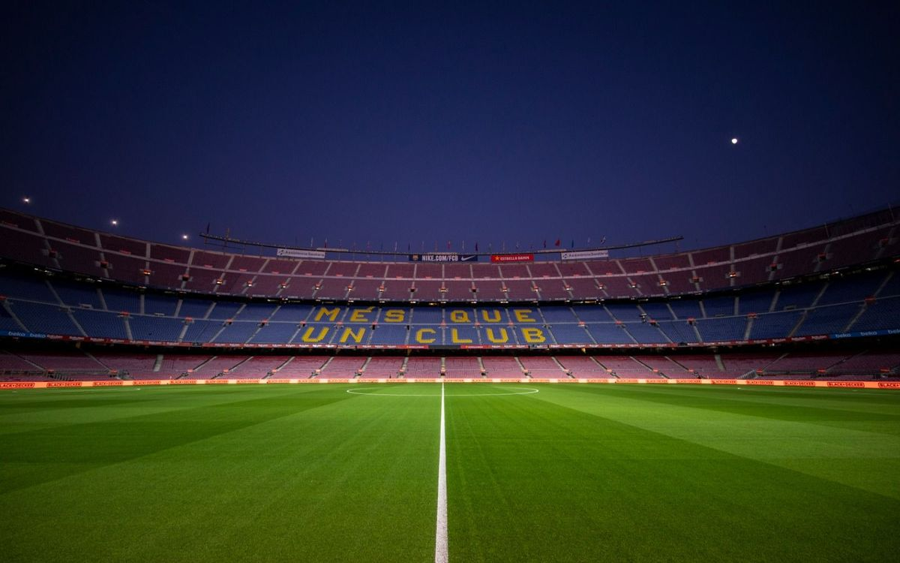

Barça's new stadium replaced their old ground of Les Corts which with a capacity of just 48,000 was too small to accomodate the interest generated by a team led by Hungarian star Ladislao Kubala.
The stadium was designed by architects Francesc Mitjans Miró and Josep Soteras Mauri, with the collaboration of Lorenzo García Barbón, and it was constructed between 1955 and 1957, using mainly concrete and iron. The whole project cost a staggering 288 million pesetas, which meant the club would spend the following years heavily in debt.
Although it was originally going to go under the official name of ‘Estadi del FC Barcelona’, it soon came to be popularly known as the 'Camp Nou' (the ‘new ground’), as opposed to the club’s old home at Les Corts. It was not until the 2000/2001 season that, following a postal vote made by the Club membership, that the decision was made to make ‘Camp Nou’ the official name of the stadium. Of the 29,102 votes the club received, a total of 19,861 (68.25%) preferred Camp Nou to Estadi del FC Barcelona.
The stadium’s maximum height is 48 metres, and it covers a surface area of 55,000 square metres (250 metres long and 220 metres wide). In accordance with UEFA stipulations, the playing area has been downsized to 105 metres x 68 metres.
With a capacity of 99,354, it is now the biggest stadium in Europe. However, the total capacity has varied over the years owing to different modifications. When it was first opened in 1957, it held 93,053 spectators, which would be increased to 120,000 in 1982 on occasion of the FIFA World Cup. However, the introduction of new regulations outlawing standing areas reduced the stadium’s capacity in the late 1990s to just under 99,000.
In the 1998-99 season, UEFA recognised the services and facilities at Camp Nou by awarding it five star status. In 2010, in line with the new UEFA regulations, this category was replaced by the new 'Category 4' title which corresponds to the stadiums which fulfill the most demanding requirements with regards to facilities, services and capacity such as FC Barcelona's ground.
Of the different facilities on offer inside the stadium, of particular note are a chapel next to the changing rooms, the presidential box, the VIPs lounge, the press rooms, several television studios, the Sports Medicine Centre, the Operative Control Unit (UCO), the veteran players area, the FC Barcelona club museum, and the offices of all of the many different Club departments.